<!DOCTYPE html>
<html lang="en">
  <head>
    <meta charset="utf-8" />
    <meta name="viewport" content="width=device-width, initial-scale=1.0, maximum-scale=1.0, user-scalable=no" />

    <title>不再fine-tuning? Prompt Tuning 在代码智能中的实验评估</title>
    <link rel="shortcut icon" href="./favicon.ico" />
    <link rel="stylesheet" href="./dist/reset.css" />
    <link rel="stylesheet" href="./dist/reveal.css" />
    <link rel="stylesheet" href="./dist/theme/night.css" id="theme" />
    <link rel="stylesheet" href="./css/highlight/base16/zenburn.css" />


  </head>
  <body>
    <div class="reveal">
      <div class="slides"><section  data-markdown><script type="text/template">
<style type="text/css"> 
h1,h2,h3,p{ 
  text-align: left; 
}
h1.c,h2.c,h3.c{
  text-transform: capitalize;
}
h2.n,h3.n{
  text-transform: none;
}
img{
  text-align:left;
}
div{
  display:flex;
  justify-content: center;
  vertical-align:middle;
}
img.fl{
  float:left;
}
div.sma{
  font-size:30px;
  margin:20px 10px;
}
p.right{
  text-align:right;
}
img.b{
  border-radius: 5pt;
}
</style> 

<h2 align="center">No More Fine-Tuning? An Experimental Evaluation of Prompt Tuning in Code Intelligence</h2>
<br/>
<ul>
    <li>Authors:&emsp;Chaozheng Wang,Yuanhang Yang,Cuiyun Gao,etc.</li>
    <li>Published in:&emsp;ESEC/FSE'22 </li>
</ul>
<br/><br/>

<p class="right">汇报人：王小娅</p>
<p class="right">汇报时间：12.06</p>
---
<h1>Outline</h1>
<h2>1. Background</h2>
<h2>2. Experimental Evaluation</h2>
<h2>3. Experimental Results</h2>
<h2>4. Discussion</h2>
<h2>5. Conclusion</h2>
---

*<p>Chaozheng Wang<sup>[2]</sup></p>*
<div>

<div>
  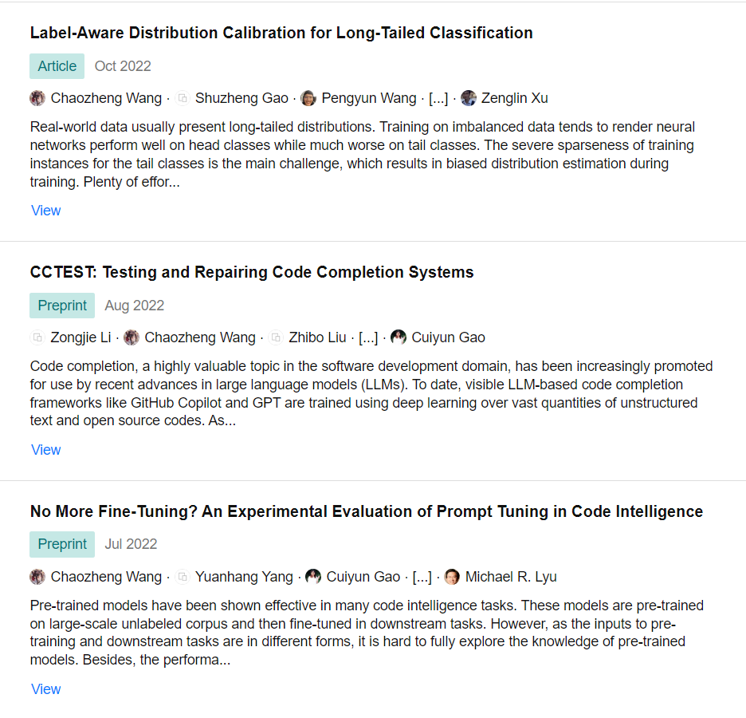
</div>
<div>
  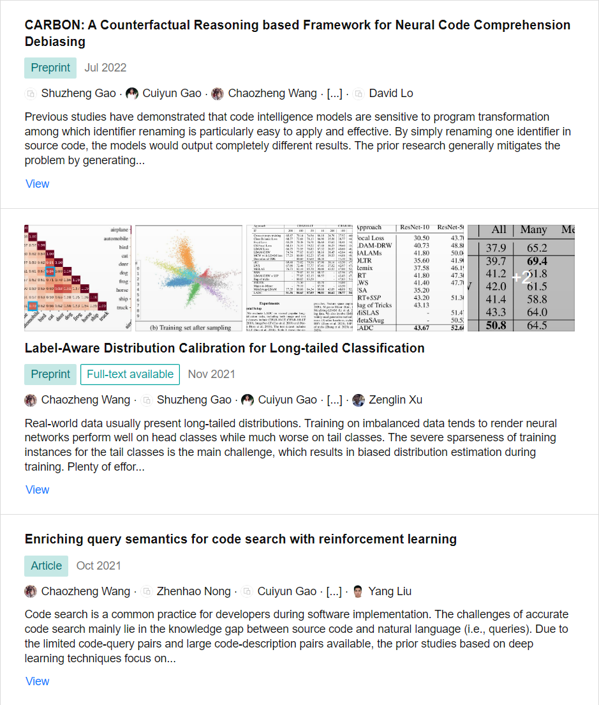
</div>

</div>

---

*<p>Yuanhang Yang<sup>[3]</sup></p>*
<div>
  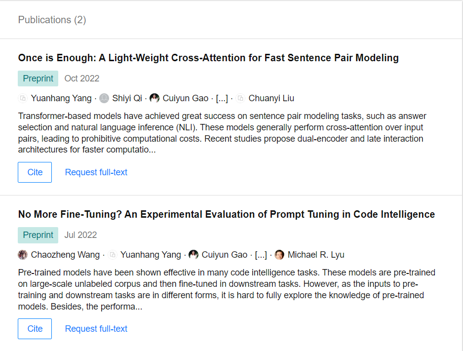
</div>

---
*<p>Cuiyun Gao<sup>[4]</sup></p>*
<div> 


<div>  
  
</div>
<div>
  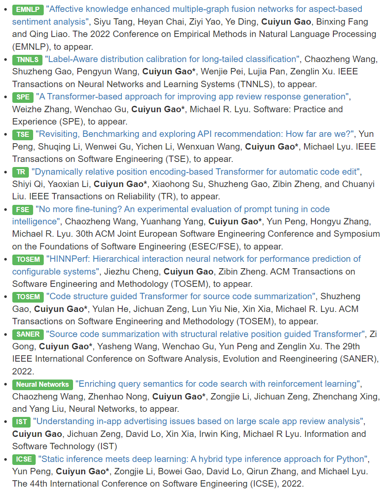
</div>

</div>
---

<h1>1. Background</h1>

---

<h2 class="c">Two paradigms of tuning pre-trained models</h2>
<br/>
<h3 class="c">Weakness of fine-tuning</h3>
<p>1. There exist gaps between the pre-training and fine-tuning process.</p>
<p>2. The performance of fine-tuning largely depends on the scale of downstream data.</p>
<h3 class="c">What is prompt tuning</h3>
<p>1. Rewrites the input by adding a natural language prompt with masked token </p>
<p>2. Prompt tuning process is to predict the masked token</p>
<p>3. There might be a verbalizer that map the predicted token to some class(in a classification task) </p>


---

<h2 class="c">Fine-tuning vs. Prompt tuning</h2>
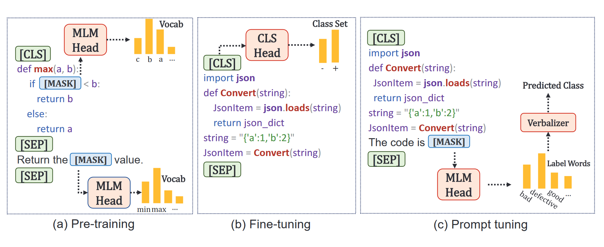<br/>
<p>&emsp;&emsp;In short, prompt tuning reformulates the classification problem into an masked language model problem, align the objective with the pre-training stage.</p>
<!-- 在这一张介绍清楚prompt 和 vervalizer的概念，下一张直接进入prompt tuning 的分类 -->

---

<h2 class="c">prompt tuning techniques</h2>
<h3 class="n">1. hard / discrete prompt</h3>
<p>Prompts are fixed natural language instruction, each is meaningful.</p>
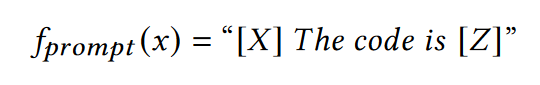<br/>
<h3 class="n">2. Vanilla soft prompt</h3>
<p>An alternative to hard prompt, virtual tokens are continuous vectors.</p>
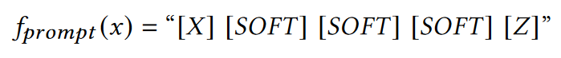<br/>
<h3 class="n">3. Prefix soft prompt</h3>
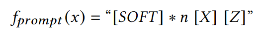<br/>

---

<h1>2. Experimental Evaluation</h1>

---

<h3 class="n"><b>RQ1</b> - How effective is the prompt tuning in solving code intelligence tasks? </h3><br/>
<h3 class="n"><b>RQ2</b> - How capable is prompt tuning to handle data scarcity scenarios? </h3><br/>
<h3 class="n"><b>RQ3</b> - How different prompt templates affect the performance of prompt tuning?</h3>

---

<h2 class="n">Code intelligence tasks in this work</h2><br/>
<h3 class="n">1. Defect Detection</h3>

<div>
  <div>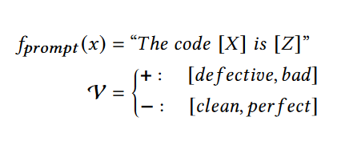</div>
  <div class="sma">
  Given a code snippet, defect detection aims to identify whether it is defect prone, such as memory leakage and DoS attack.
  </div>
</div>

<h3 class="n">2. Code summarization</h3>

<div>
  <div>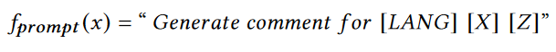</div>
  <div class="sma">
  The code summarization task aims to generate a natural language comment to summarize the functionality of the given code snippet.
  </div>
</div>


<h3 class="n">3. Code Translation</h3>

<div>
  <div>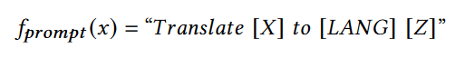</div>
  <div class="sma">
  Code translation aims to migrate legacy software from one programming language to another one.
  </div>
</div>

---

<!-- 指标 -->
<h2 class="n">Evaluation metrics</h2><br/>
<h3 class="n">1. Defect Detection</h3>

<div>
  <div>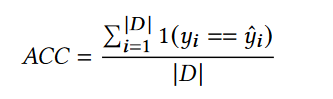</div>
  <div class="sma">
  When used for evaluating code translation,<br/> it is the most strict metric.
  </div>
</div>

<h3 class="n">2. Code summarization</h3>

<div>
  <div>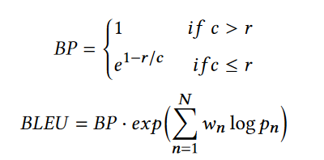</div>
  <div class="sma">
  Bilingual Evaluation Understudy (BLEU)<br/> the closer the generated text is to the result of ground truth text,<br/> the higher the generation quality.
  </div>
</div>


<h3 class="n">3. Code Translation</h3>

<div>
  <div>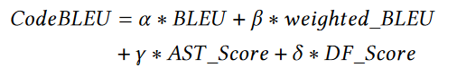</div>
  <div class="sma">
  Takes both the code structure and semantics into account for measuring<br/> the similarity between the generated code and the ground truth.
  </div>
</div>

---

<!-- 模型和超参数设置 -->
<h2 class="n">Pre-trained models</h2><br/>
<h3 class="n">CodeBERT</h3>
<p>1. An encoder-only model which is realized based on RoBERTa, which has 125 million parameters.</p>
<p>2. It is able to encode both source code and natural language text, but not decode.</p>
<h3 class="n">CodeT5</h3>
<p>1. A variant of text to text transfer Transformer.</p>
<p>2. It can solve both code understanding and code generation tasks.</p>
<p>3. CodeT5 is classified into two versions: CodeT5-small and CodeT5-base, 60 million and 220 million, respectively.</p>

---

<!-- 数据集 -->
<h2 class="n">Evaluation datasets - CodeXGLUE<sup>[1]</sup></h2>
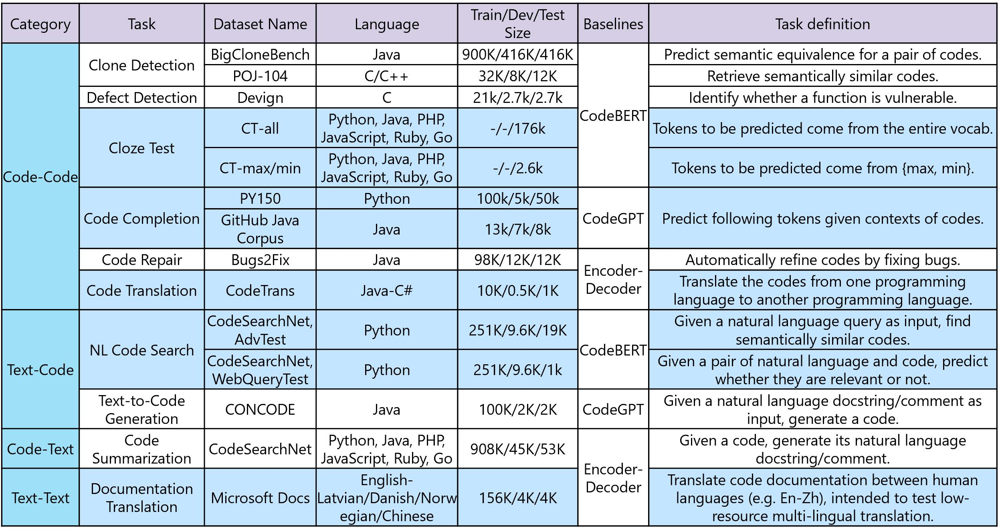

---

<h1>3. Experimental Results</h1>

---

<h3 class="n"><b>RQ1</b> - Effectiveness of Prompt Tuning </h3><br/>

*<p>Task : defect detection</p>*<br/>
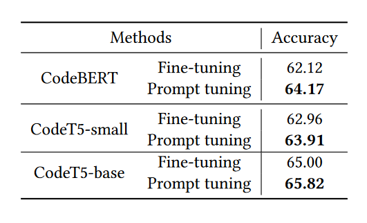

---

<h3 class="n"><b>RQ1</b> - Effectiveness of Prompt Tuning </h3><br/>

*<p>Task : code summarization</p>*<br/>
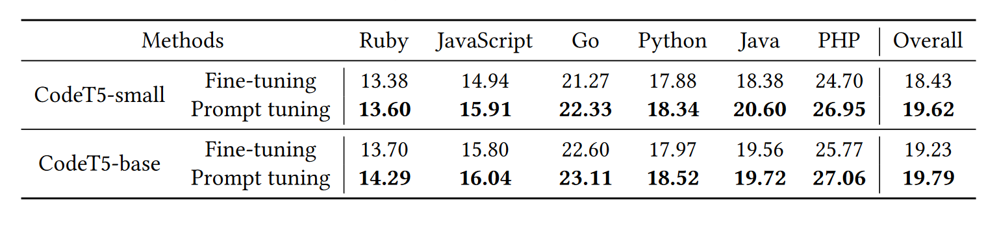

---

<h3 class="n"><b>RQ1</b> - Effectiveness of Prompt Tuning </h3><br/>

*<p>Task : code translation</p>* <br/>
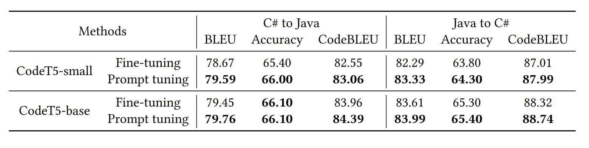

---

<h3 class="n"><b>RQ2</b> - Capability of Prompt Tuning in Different Data Scarcity Scenarios </h3><br/>

*<p>Two kinds of data scarcity settings:</p>*<br/>
<p>1. Low-resource scenario</p>
<p>In which there are significantly few training instances.</p>
<p>We simulate this setting by randomly select a small subset of training instances(shots).</p>
<p>2. Cross-domain scenario</p>
<p>In which the model is trained on a similar data-sufficient domain and tested on target domain.</p>
<p>We train Java or Python, evaluate on Ruby, JavaScript, and GO.</p>

---

<h3 class="n"><b>RQ2</b> - Capability of Prompt Tuning in Different Data Scarcity Scenarios </h3><br/>

*<p>Scenario : low-resource</p>* <br/>
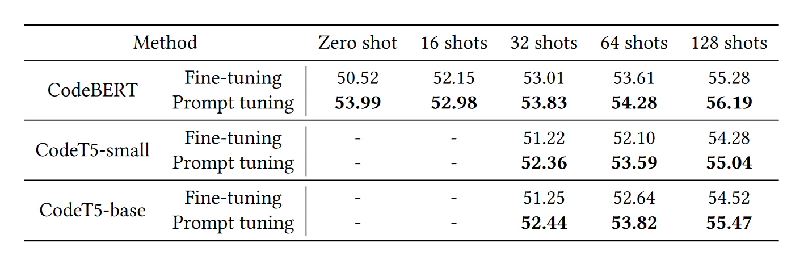

---


*<p>Scenario : low-resource</p>* 
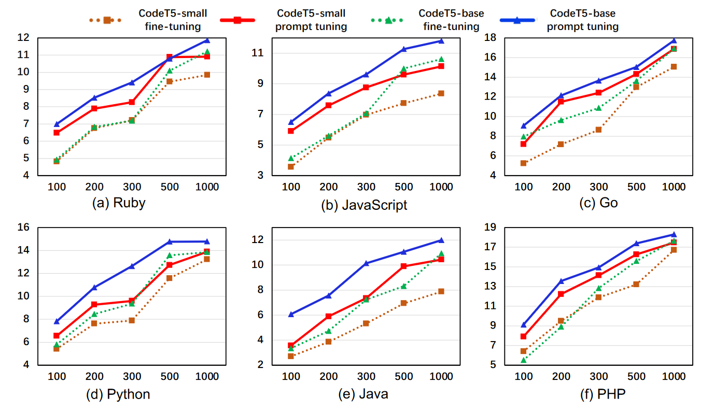

---

*<p>Scenario : cross-domain</p>* <br/>
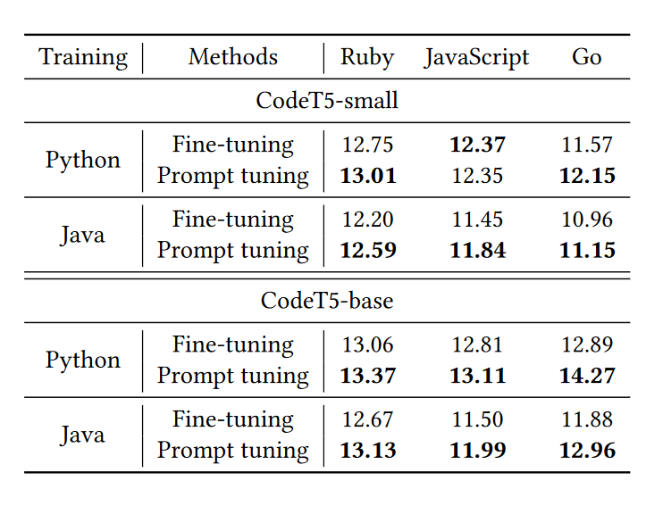

---

‍‍‍‍‍‍<h3 class="n"><b>RQ3</b> - Impact of Different Prompts </h3>

*<p>Different Hard Prompt (template design)</p>* 
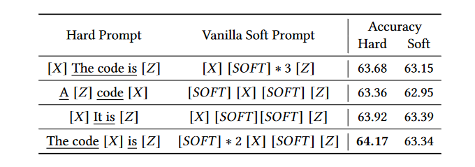
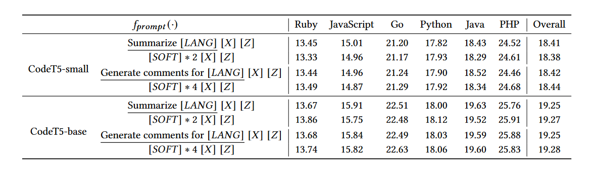


---

*<p>Different Hard Prompt (different verbalizers)</p>* <br/>
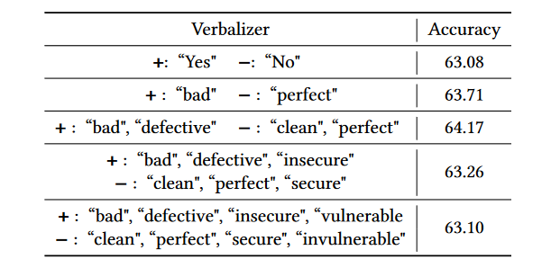

---

*<p>Hard Prompt vs. Vanilla Soft Prompt</p>* 


---

*<p>Different Lengths of Prefix Soft Prompts</p>* <br/>
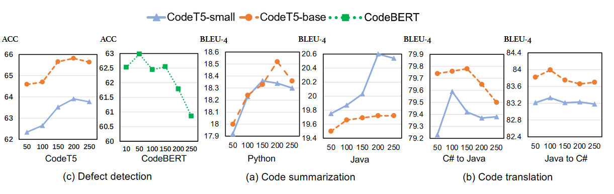

---

<h1>4. Discussion</h1>

---

<h2 class="n">Implications of Findings</h2><br/>
<h3 class="n">On the utilization of pre-trained models</h3>
<p>1. Prompt-tuning is a superior solution when there is a lack of task-specific data.</p>
<p>2. Implement prompt tuning - OpenPrompt framework<sup>[5]</sup></p>
<h3 class="n">On the utilization of prompts</h3>
<p>1. Different templates and verbalizers influence the performance.</p>
<p>2. The best performance is achieved mostly by well-designed hard prompt.</p>
<p>3. The performance of prefix soft prompt varies with its length.</p>

---

<h2 class="n">Future Directions</h2><br/>
<p>&emsp;&emsp;First, we suggest future research to consider more characteristics of source code, like syntactic structures, in the design of template and the choices of verbalizer.</p><br/>
<p>&emsp;&emsp;Second, through constructing cloze-style prompt template, the factual knowledge and biases contained in the pre-trained models can be investigated.</p>

---

<h1>5. Conclusion</h1>

---

<h2 class="c">Strengths</h2>
<p> 将Prompt-tuning从NLP迁移到PLP，为将来的code intelligence工作提供铺垫。</p>
<p> 研究了3个类型的prompt templates对PTM在code intelligence任务上的表现的影响。</p>

<h2 class="c">Weaknesses</h2>

<p> Limited datasets.</p>
<p> Limited downstream tasks.</p>
<p> Suboptimal prompt design.</p>

<h2 class="c">Insights</h2>
<p> 提供了使用Prompt进行模型调优的实验依据及切实可行的路径。</p>


---

<h2>REFERENCES</h2><br/>
<p><a href="https://github.com/microsoft/CodeXGLUE">[1] benchmark dataset - CodeXGLUE</a></p>
<p><a href="https://www.researchgate.net/profile/Chaozheng-Wang">[2] The first author - Chaozheng Wang's profile</a></p>
<p><a href="https://www.researchgate.net/scientific-contributions/Yuanhang-Yang-2226775342">[3] The second author - YangyuanHang's profile</a></p>
<p><a href="https://cuiyungao.github.io/">[4] The third author - CuiyunGao's homepage</a></p>
<p><a href="https://github.com/thunlp/OpenPrompt">[5] OpenPrompt framework</a></p>
<p><a href="https://github.com/adf1178/PT4Code">[6] Code with this paper</a></p>

---

*<div><h1>THANKS</h1></div>*
<div><br/></div>

---</script></section></div>
    </div>

    <script src="./dist/reveal.js"></script>

    <script src="./plugin/markdown/markdown.js"></script>
    <script src="./plugin/highlight/highlight.js"></script>
    <script src="./plugin/zoom/zoom.js"></script>
    <script src="./plugin/notes/notes.js"></script>
    <script src="./plugin/math/math.js"></script>
    <script>
      function extend() {
        var target = {};
        for (var i = 0; i < arguments.length; i++) {
          var source = arguments[i];
          for (var key in source) {
            if (source.hasOwnProperty(key)) {
              target[key] = source[key];
            }
          }
        }
        return target;
      }

      // default options to init reveal.js
      var defaultOptions = {
        controls: true,
        progress: true,
        history: true,
        center: true,
        transition: 'default', // none/fade/slide/convex/concave/zoom
        plugins: [
          RevealMarkdown,
          RevealHighlight,
          RevealZoom,
          RevealNotes,
          RevealMath
        ]
      };

      // options from URL query string
      var queryOptions = Reveal().getQueryHash() || {};

      var options = extend(defaultOptions, {"width":1520,"height":950,"margin":0.04,"progress":true,"slideNumber":true}, queryOptions);
    </script>


    <script>
      Reveal.initialize(options);
    </script>
  </body>
</html>
